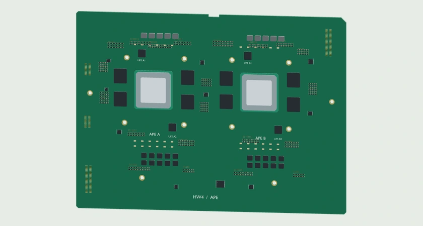

驾驶辅助计算板

在原厂板照上辨认两颗 APE 处理器和四个 UFS 标注位。GDDR 用于计算时读写数据，UFS 用于断电后仍需保留的数据。选择任一处理器可以拆出基板、裸片、顶盖、热界面层和一小块示例焊球。
资料与适用范围（4）
-
Tesla · 2024+ Model 3，HW4 两块 PCBA
阅读 HW4 小节。原厂标注了两块板及处理器、非易失存储器的位置。
-
Tesla · APE 板实物图
两个大圈对应 APE 处理器，四个小圈对应 UFS。A、B 及上下方的编号是本模型的讲解索引。
-
TechInsights · HW4 编号 1960600 拆解
公开摘要报告该样件使用 GDDR6。此样件与演示车辆的板号对应关系待核实。
-
铠侠 · 车载 UFS 与 e-MMC
比较两种嵌入式非易失存储及其车载用途。厂商产品用于解释器件类别。